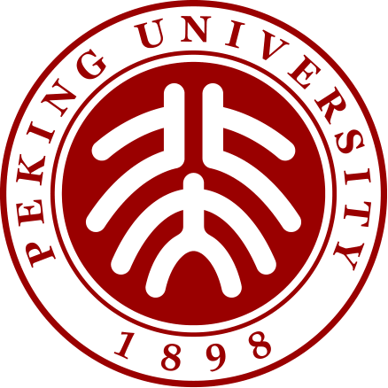

我是杨健淳，武汉大学空间信息与数字技术专业本科生，主要关注世界模型、高效微调与推理优化。
I am a third-year undergraduate in Spatial Information and Digital Technology (Experimental Program) at Wuhan University.
My research interests are world models, efficient fine-tuning, and inference optimization. I work on continual model merging and efficient inference for driving world models, with first-author manuscripts PLEAT and DriveCache.
💻 Research Experience

Research Intern · Mentor: Prof. Mang Ye
Continual learning and model merging: progressive aggregation and transport of LoRA experts. First-author work: PLEAT.

Research Collaboration
Learning motion-aligned latent dynamics from human videos and transferring them to robot action generation. Work: LD4WAM.

Research Collaboration
Efficient driving world model inference: action-aware cache budgeting, dynamic-programming schedules, and causal refresh control. First-author work: DriveCache.
Research Intern · Mentor: Fangzhao Wu
Representation control for LLM social agents, behavior calibration, and stability in multi-turn interactions. Work: RepE-Agent. Also participated in the MIND news recommendation benchmark.
📝 Publications & Manuscripts
Click any figure to view its complete, full-resolution version.
PLEAT: Progressive LoRA Expert Aggregation and Transport for Continual Model Merging
ICLR 2027 · Under Review · First Author
A training-free method for continual LoRA merging. PLEAT progressively expands a shared input basis, aligns incoming experts, and transports historical coefficients, retaining past knowledge without revisiting old expert weights. On seven DriveLM driving-QA tasks, it reaches 41.7 average Token-F1, 0.5 points above the matched OPCM baseline.

DriveCache: Action-Aware Caching for Driving World Model Inference
AAAI 2027 · Under Review · Round 2 · First Author
A training-free, action-aware cache controller for driving world models. Planned ego-motion determines the cache budget; dynamic programming schedules reuse, while a causal drift guard refreshes stale features. On Wan2.2 A14B, it achieves approximately 2× speedup and a 2.036 dB PSNR improvement over TeaCache in the reported setting.

LD4WAM: Learning Latent Dynamics from Human Videos for World Action Models
AAAI 2027 · Under Review · Round 2
Learns motion-aligned latent dynamics from human videos to bridge visual prediction and executable robot actions. Semantic reconstruction and motion alignment supervise a latent dynamics model, whose signals condition action generation. Pretrained on over 5,000 hours of human and robot data; 93.4% average success on RoboTwin and 70.5% across seven real-robot tasks.
More Papers (4)
OneWorld: Learning Consistent Physics Across Actions in World Models
ICLR 2027 · Under Review
Addresses inconsistent physical parameters across action-conditioned futures from the same scene. Shared latent physics jointly constrains training and sampling, improving cross-action consistency on pushing blocks, pushing ropes, and pouring water.
RepE-Agent: Behavior-Calibrated Representation Control for LLM Social Agents
AAAI 2027 · Under Review · Round 2
Training-free representation control for LLM social agents through behavior-calibrated intervention strength, social-cue gating, and online feedback. The manuscript reports roughly an order-of-magnitude lower calibration error and behavior retention increasing from 0.62 to 0.95 after 40 turns.
GastroMAS: Hierarchical Graph-Guided Multi-Agent Reasoning for Traceable Clinical Decision Support
AAMAS 2027 · Under Review
Coordinates clinical agents through a shared Evidence–Mechanism–Decision graph for traceable reasoning. The manuscript reports a 0.046 gain in CUREv1 retrieval NDCG@10 over the retrieval baseline.
🎖 Honors & Competitions
- MIND News Recommendation Competition (Microsoft Research Asia): 3rd on the overall Official Test leaderboard.
- Gold Award, 13th Wuhan University “Ziqiang Cup” Entrepreneurship Competition. Core member of the disaster perception and early-warning platform project.
- Awards in CUMCM, MCM/ICM, and the Huazhong Cup mathematical modeling competitions.
📖 Education
Undergraduate, Spatial Information and Digital Technology (Experimental Program)
School of Remote Sensing and Information Engineering
Selected through a university-wide secondary selection of 28 students. Class Youth League Secretary.
🔬 Project
National Undergraduate Innovation Training Program, approved in 2026.
A multi-layer GraphRAG system for neurology-assisted diagnosis.